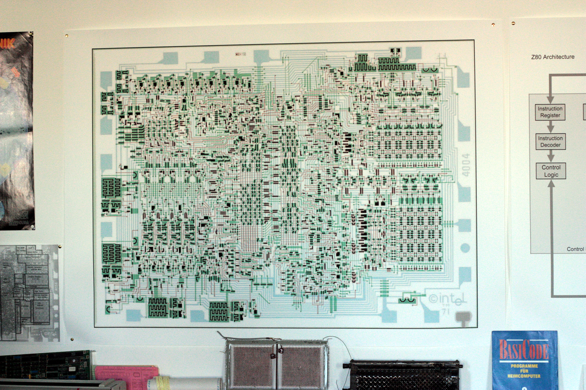
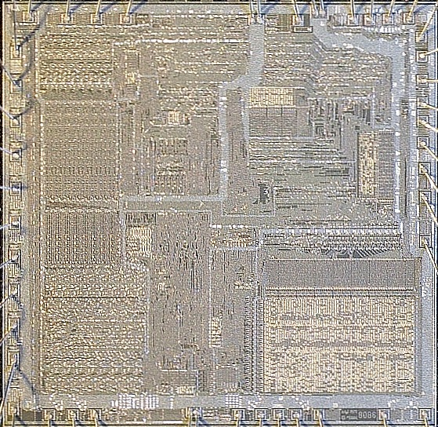
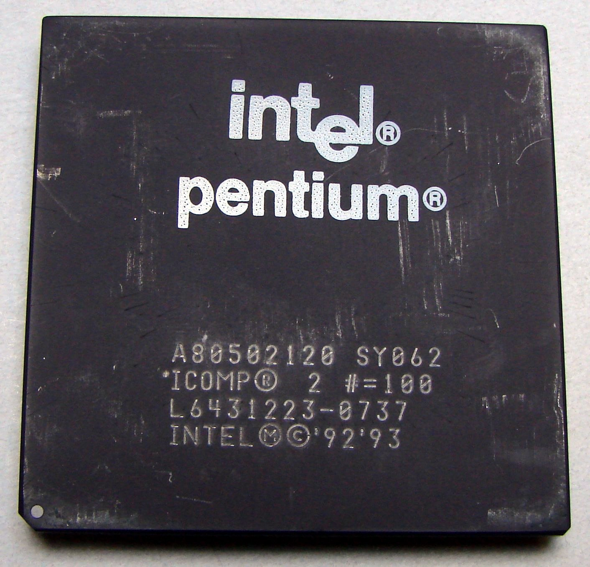
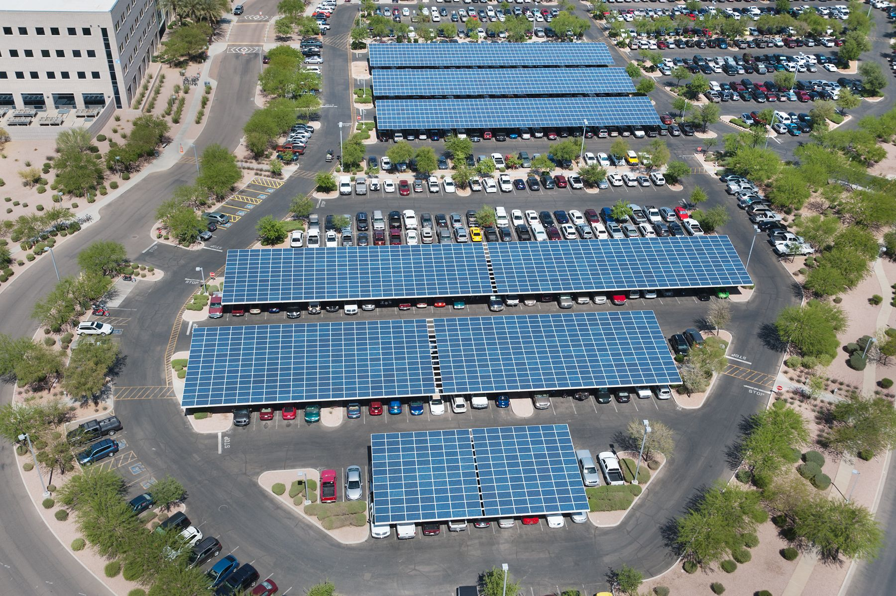
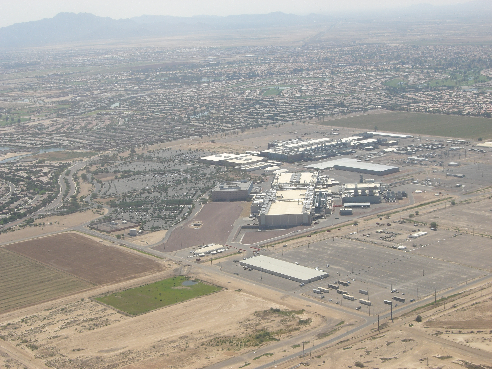
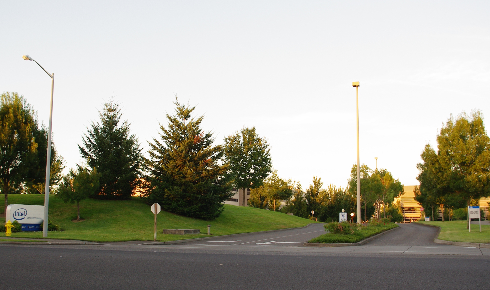

01
011968
تأسيس إنتل
يترك روبرت نويس وغوردون مور شركة فيرتشايلد لتأسيس شركة جديدة، وينضم إليهما آندي غروف بعد ذلك بقليل.
ذاكرة السيليكون
رحلة إنتل من شركة ناشئة في سانتا كلارا إلى واحدة من أكثر شركات التقنية تأثيراً في العالم.
استكشف الرحلة01 / الخط الزمني
مرّر لاستكشاف اللحظات التي أعادت تعريف الحوسبة، من أول معالج دقيق إلى رهان إنتل على المستقبل.
011968
يترك روبرت نويس وغوردون مور شركة فيرتشايلد لتأسيس شركة جديدة، وينضم إليهما آندي غروف بعد ذلك بقليل.

021971
تضم شريحة 4004 نحو 2300 ترانزستور وتطلق عصر المعالجات الدقيقة.

031978
يصبح تصميم 8086 أساساً لحوسبة الحاسوب الشخصي لعقود طويلة.

041993
تحوّل حملة «Intel Inside» الرقاقة إلى اسم مألوف في كل منزل.
 05
052006
تنتقل إنتل من سباق سرعة الساعة إلى قوة عدة أنوية في شريحة واحدة.

062020
أهداف طموحة للمياه والطاقة والنفايات ترسم مساراً أكثر استدامة.
2021
يضع بات غيلسنغر مستقبل إنتل على طريق تصنيع الشرائح للآخرين.

082022
يبدأ إنشاء مجمع مصانع بقيمة 20 مليار دولار مع عودة التصنيع إلى الواجهة.

092024
بعد تراجع السهم وتعثر التحول، يدفع مجلس الإدارة الرئيس التنفيذي إلى الرحيل.
2026
استثمارات جديدة وشرائح أحدث تمنح إنتل فرصة لإثبات حضورها من جديد.
02 / ابقَ على اطلاع
احصل على قصص التقنية والابتكار التي تستحق وقتك، مرة واحدة كل شهر.